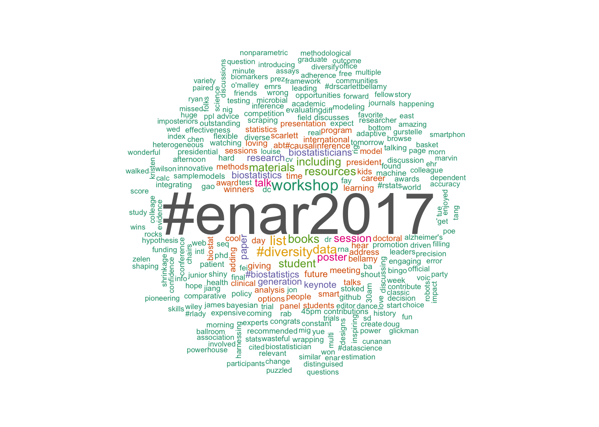

I had an absolutely delightful time at ENAR this year. Lots of talk about the intersection between data science & statistics, diversity, and exceptional advancements in statistical methods.
I loved it, but let’s see what others were saying! Check out this word cloud of the most commonly tweeted words.

This certainly sums up my experience. Some of my favorites that make a big appearance:
- methods
- causal inference
- resources
- diversity
- data
- learning
- loving
Since there was quite a bit of twitter action, I thought I’d do a quick tutorial in scraping twitter data in R.
Get twitter credentials
Go here and create an app - this will give you a Consumer key, Consumer secret, Access token, & Access secret.
Scrape tweets
We will use the twitteR package to scrape the tweets using the searchTwitter function.
library('twitteR')
setup_twitter_oauth(consumer_key="PASTE_YOUR_CONSUMER_KEY_HERE",
consumer_secret= "PASTE_YOUR_CONSUMER_SECRET_HERE",
access_token="PASTE_YOUR_ACCESS_TOKEN_HERE",
access_secret="PASTE_YOUR_ACCESS_SECRET_HERE")
dat <- searchTwitter('#ENAR2017', n = 1e4, since = '2017-03-10')Wrangle tweets
Now we need to corral these tweets into something we can analyze. We are going to use some data-wrangling packages (dplyr, purrr😺, and stringr) as well as Julia & David’s tidytext.
For more details on how to analyze text,
check out their book Text Mining with R,
the code below is modified from one of
their examples.
We will then use the wordcloud package to display our results.
#load packages
library('dplyr')
library('purrr')
library('stringr')
library('tidytext')
library('wordcloud')We are going to map the tweets into a lovely dataframe, get rid of unwanted symbols and links, split the tweets into individual words, and filter out some stop words.
#map this into a dataframe
tweets <- map_df(dat, as.data.frame)
#this will drop links & symbols
drop_pattern <- "https://t.co/[A-Za-z\\d]+|http://[A-Za-z\\d]+|&|<|>|RT|https|ht"
#this pattern is great for twitter, includes # and @ symbols
unnest_pattern <- "([^A-Za-z_\\d#@']|'(?![A-Za-z_\\d#@]))"
tidy_tweets <- tweets %>%
filter( !grepl("#OTORRINO", text)) %>% # we have one tweeter with our hashtag that wasn't at our conference
mutate(text = str_replace_all(text, drop_pattern, "")) %>%
unnest_tokens(word,
text,
token = "regex",
pattern = unnest_pattern) %>%
filter(!(word %in% stop_words$word),
str_detect(word, "[a-z]"),
!grepl("@", word )) Now it’s plotting time!
cols <- c(brewer.pal(8,"Dark2"), rep(brewer.pal(8,"Dark2"), each = 5) ) #make some colors for our plot
tidy_tweets %>%
count(word) %>%
with(wordcloud(word,
n,
min.freq = 5,
random.order = FALSE,
colors = cols))You did it! Easy as π.
{kind=link}

For giggles, let’s try another word cloud package wordcloud2. This one is interactive (but not on CRAN, you can install using devtools::install_github("lchiffon/wordcloud2")).
For a word cloud similar to the one above, we can use the wordcloud2 function.
library('wordcloud2')
tidy_tweets %>%
count(word) %>%
filter(n > 2) %>%
wordcloud2(size = 3, minRotation = -pi/2, maxRotation = -pi/2)Try the following to make an R shaped cloud using the letterCloud function!
tidy_tweets %>%
count(word) %>%
filter(n > 1) %>%
letterCloud(size = 3, word = "R") Happy scraping!